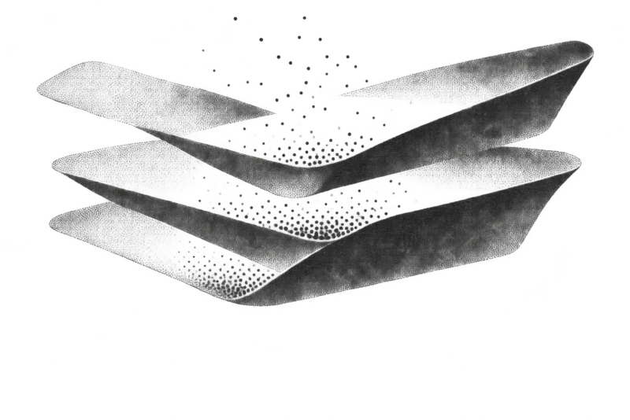

ACTUALITÉS · DÉCRYPTAGES · SOURCES
Le cloud,
en mouvement.
Failles, annonces, souveraineté, sobriété des infrastructures, IA et licences : ce qui change, ce que ça implique, ce qu’on peut vérifier.
Dernières publications

Souveraineté & données
Du PaaS à l’IaaS sans refaire son produit
Comprendre ce qui change quand une application quitte les plateformes gérées pour tourner sur son propre compte cloud.
Lire l’article ↗
Souveraineté & données
Migrer des objets sans perdre le fil
Choisir une source et une cible compatibles, lancer la copie, suivre son avancement et vérifier le résultat.
Lire l’article ↗Nature & infrastructure
Estimation et consommation cloud : deux lectures différentes
L’estimation décrit une stack avant son déploiement ; le suivi live observe les consommations remontées par le fournisseur.
Lire l’article ↗Failles & actualités
Node.js annonce des correctifs de sécurité pour le 11 novembre
Les branches Node.js 22, 24 et 26 doivent recevoir des correctifs. Ce que l’annonce officielle permet de vérifier avant la publication des versions.
Lire l’article ↗Failles & actualités
OpenCVE : suivre les vulnérabilités qui concernent vos produits
OpenCVE agrège des avis publics et permet de surveiller des éditeurs et produits choisis. Comprendre ce que cet outil apporte — et ce qu’un scan de code doit compléter.
Lire l’article ↗Failles & actualités
OpenCVE : API, hébergement et licence à examiner
L’API d’OpenCVE permet de relier les alertes CVE à d’autres outils. Avant de l’héberger ou de l’intégrer, vérifier les accès, les limites du plan et les conditions de licence.
Lire l’article ↗IA & opérations
CybeDefend : intégrer la sécurité au travail des agents de code
CybeDefend présente une plateforme AppSec et VibeDefend, une couche destinée aux agents de code. Voici les rôles annoncés et les questions à poser avant de l’adopter.
Lire l’article ↗IA & opérations
CybeDefend et MCP : vérifier les accès et les données échangées
Un serveur MCP relie un agent à des outils. Avant de l’activer, comprendre les permissions, les données transmises, la région utilisée et les actions que l’agent peut déclencher.
Lire l’article ↗Failles & actualités
CVE, CWE, CVSS, EPSS et KEV : cinq repères différents
Un identifiant décrit une vulnérabilité, une faiblesse la classe, un score estime sa sévérité, un autre sa probabilité d’exploitation. Les distinguer évite de trier les alertes à l’aveugle.
Lire l’article ↗Failles & actualités
Une CVE détectée ne prouve pas qu’elle est exploitable
Une vulnérabilité doit être rapprochée des versions installées, du chemin de code et de l’exposition réseau avant de décider quoi corriger en premier.
Lire l’article ↗Licences & logiciel libre
Quand une licence change, le cloud change aussi
MongoDB, HashiCorp et Redis ont fait évoluer les licences de certains projets. Comprendre ce que cela change pour un produit, un service managé et une équipe qui dépend de ces outils.
Lire l’article ↗Licences & logiciel libre
MongoDB 6 sur un PaaS : licence, catalogue et support
Pourquoi un PaaS peut proposer MongoDB 6 sans que la SSPL impose cette version, et pourquoi son état de support compte désormais autant que le choix de licence.
Lire l’article ↗Nature & infrastructure
5 pratiques concrètes pour une infrastructure plus responsable
Observer l’usage, ajuster les ressources et mesurer les effets réels : cinq gestes utiles avant de parler de cloud responsable.
Lire l’article ↗Nature & infrastructure
Mettre une VM en pause : ce qui s’arrête et ce qui continue
Arrêter une machine peut libérer des ressources, mais le coût et l’effet dépendent des volumes, adresses, sauvegardes et services associés.
Lire l’article ↗Souveraineté & données
Cloud : les questions à poser avant de parler de souveraineté
La région de stockage ne dit pas tout : examiner l’exploitation, les accès, les sauvegardes, les sous-traitants et les garanties de l’offre.
Lire l’article ↗Souveraineté & données
Compatible S3 ne veut pas dire migration transparente
Les API se ressemblent, mais les fonctionnalités, métadonnées, permissions et règles diffèrent entre stockages objet.
Lire l’article ↗Souveraineté & données
Migrer une base de données : les étapes avant le basculement
Sauvegarde, répétition, cohérence et retour arrière : préparer ces points réduit les surprises d’une migration de base.
Lire l’article ↗Failles & actualités
OWASP Juice Shop : apprendre à chercher les failles dans un cadre sûr
Juice Shop est une application volontairement vulnérable conçue pour l’apprentissage et les démonstrations. Voici ce qu’elle permet de comprendre — et ce qu’un exercice ne démontre pas sur une application réelle.
Lire l’article ↗Failles & actualités
Cyber en France : quatre incidents marquants, bilan provisoire 2026
Au 10 novembre, ces incidents racontent des réalités différentes : déni de service, accès frauduleux, exfiltration de données et sabotage de systèmes physiques.
Lire l’article ↗Nature & infrastructure
Infra cloud et CSRD : les données à réunir au-delà de la facture
Une facture montre les dépenses. Pour documenter l’impact climatique du numérique, les équipes ops doivent aussi tracer énergie, périmètre, méthode et évolution des usages.
Lire l’article ↗Failles & actualités
Supermarchés : quand une cyberattaque agit sur le froid
Dans la nuit du 11 au 12 octobre, des contrôleurs de réfrigération de la grande distribution ont été ciblés. Le 9 novembre, la France a publié son attribution et un rapport conjoint du C4.
Lire l’article ↗Failles & actualités
PHP 8.2 : deux failles corrigées, une fin de support à préparer
PHP 8.2 a reçu des correctifs critiques en octobre et sort du support de sécurité le 31 décembre 2026. Les deux échéances à traiter séparément.
Lire l’article ↗IA & opérations
Une plateforme IA dans un cloud européen : les questions à poser
Le partenariat annoncé entre Dataiku et Scaleway ouvre une option d’hébergement. Il ne répond pas, à lui seul, à toutes les questions de souveraineté d’un projet IA.
Lire l’article ↗Failles & actualités
DGFiP : ce que retrace le rapport de l’ANSSI sur les incidents de 2026
Publié le 29 septembre, le rapport de l’ANSSI retrace des activités illégitimes observées de mai à août et deux périmètres d’exfiltration. Il distingue la chronologie, les causes et les mesures à renforcer.
Lire l’article ↗Nature & infrastructure
La chaleur des serveurs peut-elle vraiment servir deux fois ?
Avec l’acquisition de Qarnot, Scaleway met en avant la récupération de chaleur issue du calcul HPC. Ce que cette approche change — et ce qu’elle ne prouve pas à elle seule.
Lire l’article ↗Failles & actualités
FICOBA : ce que l’accès illégitime de 2026 a réellement exposé
Fin janvier, des identifiants usurpés ont permis de consulter une partie du fichier. Le ministère estime qu’environ 1,2 million de comptes sont concernés et décrit les données accessibles.
Lire l’article ↗Failles & actualités
La Poste : un DDoS qui a perturbé les services sans fuite de données
Commencée le 22 décembre 2025, l’attaque par déni de service a perturbé les services en ligne pendant les fêtes et jusqu’au début de janvier. La Poste dit n’avoir constaté ni intrusion ni fuite.
Lire l’article ↗